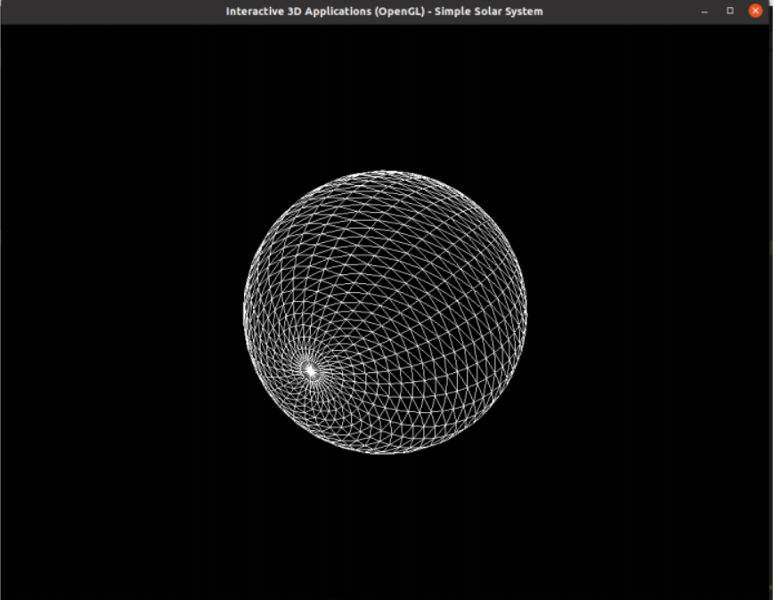

solar system
This project aims to create a mini artificial solar system with credible animation.
The starting code was provided by my professor Kiwon Um

what I learnt from this project:
→Working with Opengl library. →Mapping a 3d volume based on plane coordiantes(transforming a plane mesh to a sphere mesh):
-I used flags to distinguish between planets in order to apply the correct texture and the correct transformations for the animations →First time application of the transformation matrixes on meshes; rotation, translation, sheer & sclaing. →Understanding the basics of the rendering pipeline within OpenGL. →Walking through the different Coordinate Systems. →Mapping terxtures on meshes. →Implement the Phong model for lighting.